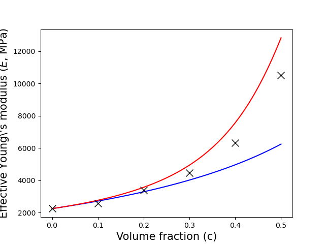

Note
Go to the end to download the full example code.
Micromechanics examples
This tutorial studies the evolution of the mechanical properties of a composite material considering spherical reinforcement.
import numpy as np
import matplotlib.pyplot as plt
from matplotlib import cm, colors
from simcoon import simmit as sim
from simcoon import parameter as par
import os
In this tutorial we will study the evolution of the mechanical properties of a 2-phase composite material considering spherical reinforcement Note that two micromechanical schemes will be utilized : Morio-Tanaka and Self-consistent
First we define the number of state variables (if any) at the macroscopic level and the material properties.
dir = os.path.dirname(os.path.realpath("__file__"))
nstatev = 0
nphases = 2 # The number of phases
num_file = 0 # The num of the file that contains the subphases
int1 = 50
int2 = 50
n_matrix = 0
props = np.array([nphases, num_file, int1, int2, n_matrix], dtype="float")
There is a possibility to consider a misorientation between the test frame of reference and the composite material orientation, using Euler angles with the z–x–z convention. The stiffness tensor will be returned in the test frame of reference. We also specify which micromechanical scheme will be used: - MIMTN → Mori-Tanaka scheme - MISCN → Self-consistent scheme
path_data = dir + "/data"
path_keys = dir + "/keys"
pathfile = "path.txt"
param_list = par.read_parameters()
psi_rve = 0.0
theta_rve = 0.0
phi_rve = 0.0
Run the simulation to obtain the effective isotropic elastic properties for different volume fractions of reinforcement up to 50%.
concentration = np.arange(0.0, 0.51, 0.01)
E_MT = np.zeros(len(concentration))
umat_name = "MIMTN"
for i, x in enumerate(concentration):
param_list[1].value = x
param_list[0].value = 1.0 - x
par.copy_parameters(param_list, path_keys, path_data)
par.apply_parameters(param_list, path_data)
L = sim.L_eff(umat_name, props, nstatev, psi_rve, theta_rve, phi_rve)
p = sim.L_iso_props(L).flatten()
E_MT[i] = p[0]
E_SC = np.zeros(len(concentration))
umat_name = "MISCN"
for i, x in enumerate(concentration):
param_list[1].value = x
param_list[0].value = 1.0 - x
par.copy_parameters(param_list, path_keys, path_data)
par.apply_parameters(param_list, path_data)
L = sim.L_eff(umat_name, props, nstatev, psi_rve, theta_rve, phi_rve)
p = sim.L_iso_props(L).flatten()
E_SC[i] = p[0]
Plotting the results
This is it, now we just need to plot the results. In blue, we plot the effective Young’s modulus vs volume fraction curve using the Mori-Tanaka scheme, in red using the Self-Consistent scheme, and with black crosses the experimental data from :cite:`Wang2003`
fig = plt.figure()
plt.xlabel(r"Volume fraction (c)", size=15)
plt.ylabel(r"Effective Young\'s modulus ($E$, MPa)", size=15)
plt.plot(concentration, E_MT, c="blue", label="Mori-Tanaka")
plt.plot(concentration, E_SC, c="red", label="Self-Consistent")
expfile = path_data + "/" + "E_exp.txt"
c, E = np.loadtxt(expfile, usecols=(0, 1), unpack=True)
plt.plot(c, E, linestyle="None", marker="x", color="black", markersize=10)
plt.show()

Total running time of the script: (0 minutes 1.061 seconds)